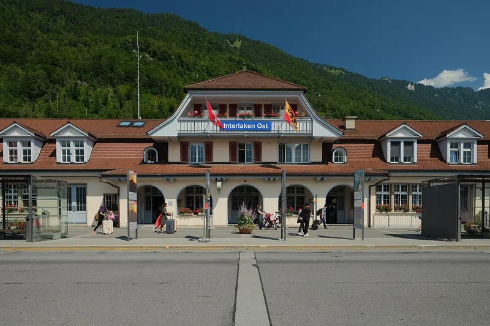

Kosten und Steuern · 5 Min. Lesezeit
Kurtaxe für Ferienwohnungen: Wer zahlt, wer rechnet ab?
Die Kurtaxe zahlt der Gast. Abrechnen müssen meistens Sie. Wir erklären das System am Beispiel von Grindelwald und Interlaken und zeigen, wo Airbnb Ihnen die Arbeit abnimmt.

Bahnhof Interlaken Ost: Wer hier ankommt und in einer Ferienwohnung übernachtet, zahlt Kurtaxe und hat Anrecht auf die Gästekarte Interlaken.
- Die Kurtaxe wird pro Person und Nacht erhoben. Der Gast zahlt, der Vermieter rechnet ab.
- In Grindelwald beträgt sie CHF 3.70 pro Nacht (Stand 2022), dazu kommt CHF 1.00 kantonale Beherbergungsabgabe.
- Im Raum Interlaken müssen sich Vermieter registrieren und brauchen eine Bewilligung der Gemeinde.
- Airbnb zieht die Abgabe in zehn Kantonen automatisch ein. Der Kanton Bern gehört nicht dazu.
Was die Kurtaxe ist
Die Kurtaxe ist eine Abgabe, die Gäste pro Übernachtung bezahlen. Je nach Ort heisst sie auch Gästetaxe oder Tourismusabgabe. Mit dem Geld finanzieren die Gemeinden Angebote für Gäste. Der Vermieter zieht die Abgabe ein und liefert sie der Gemeinde oder der Tourismusorganisation ab.
Oft kommen weitere Abgaben dazu. Im Kanton Bern sind es bis zu drei: die Kurtaxe der Gemeinde, die kantonale Beherbergungsabgabe und eine Tourismusförderungsabgabe.
Beispiel Grindelwald
| Kurtaxe pro Übernachtung | CHF 3.70 |
| Kantonale Beherbergungsabgabe pro Übernachtung | CHF 1.00 |
| Pauschalkurtaxe bei Eigennutzung, 2-Zimmer-Wohnung | CHF 444 pro Jahr |
| Pauschalkurtaxe bei Eigennutzung, 3-Zimmer-Wohnung | CHF 592 pro Jahr |
Die Zahlen haben den Stand April 2022. Die Pauschale für die eigene Nutzung rechnet die Gemeinde mit 40 Nächten pro Bett und Jahr. Wer seine Wohnung gegen Entgelt vermietet, zahlt zusätzlich eine Tourismusförderungsabgabe. Fragen Sie die aktuellen Ansätze bei der Gemeinde nach, sie können sich seither geändert haben.
Beispiel Interlaken
In Interlaken, Matten, Unterseen, Wilderswil, Gsteigwiler und Saxeten gilt eine Registrierungspflicht. Vermieter von Ferienwohnungen brauchen zuerst eine Bewilligung der Standortgemeinde. Danach melden sie die Unterkunft bei der Tourismus-Organisation Interlaken an. Das gilt unabhängig davon, über welche Plattform vermietet wird.
Abgerechnet werden die Kurtaxe, die kantonale Beherbergungsabgabe und die Tourismusförderungsabgabe. Im Gegenzug hat jeder Gast Anrecht auf die Gästekarte Interlaken. Die Registrierungspflicht gilt auch für Eigentümer, die ihre Wohnung nur selbst nutzen. Sie zahlen eine Pauschalkurtaxe.
Wo Airbnb die Abgabe automatisch einzieht
In zehn Kantonen zieht Airbnb die Tourismusabgabe bei jeder Buchung vom Gast ein und leitet sie weiter:
- Luzern, Zürich, Zug, Schaffhausen, St. Gallen
- Basel-Stadt und Basel-Landschaft
- Genf, Waadt und Freiburg
Im Kanton Luzern gilt das seit dem 1. Januar 2020 für die kantonale Beherbergungsabgabe, im Kanton St. Gallen seit dem 14. Juli 2025. In allen anderen Kantonen rechnen Sie selbst ab. Das betrifft das Berner Oberland, das Wallis, Graubünden und das Tessin. Bei Buchungen über Booking.com rechnen Sie überall selbst ab.
So gehen Sie vor
- Fragen Sie bei der Gemeinde nach, welche Abgaben gelten und wo Sie sich anmelden müssen.
- Weisen Sie die Kurtaxe im Inserat aus oder rechnen Sie sie in den Preis ein.
- Führen Sie eine Liste mit Personen und Nächten pro Buchung.
- Rechnen Sie zum verlangten Termin ab und bewahren Sie die Abrechnung auf.
Im Kanton Bern ist die Kurtaxe mit dem Pauschalabzug von 33,33 % bei den Steuern bereits abgegolten.
Unsere Kunden erhalten jeden Monat einen Bericht mit allen Buchungen, Personen und Nächten. Damit ist die Abrechnung der Kurtaxe in wenigen Minuten erledigt.
Häufige Fragen
Wer bezahlt die Kurtaxe bei einer Ferienwohnung?
Der Gast. Der Vermieter zieht die Abgabe ein und liefert sie der Gemeinde oder der Tourismusorganisation ab. In zehn Kantonen übernimmt Airbnb den Einzug automatisch.
Wie hoch ist die Kurtaxe in Grindelwald?
Sie beträgt CHF 3.70 pro Übernachtung (Stand April 2022). Dazu kommt die kantonale Beherbergungsabgabe von CHF 1.00. Die aktuellen Ansätze nennt die Gemeinde.
Zieht Airbnb die Kurtaxe im Berner Oberland automatisch ein?
Nein. Der Kanton Bern gehört nicht zu den zehn Kantonen mit einer Vereinbarung. In Grindelwald, Interlaken oder Wengen rechnen Vermieter die Kurtaxe selbst ab.